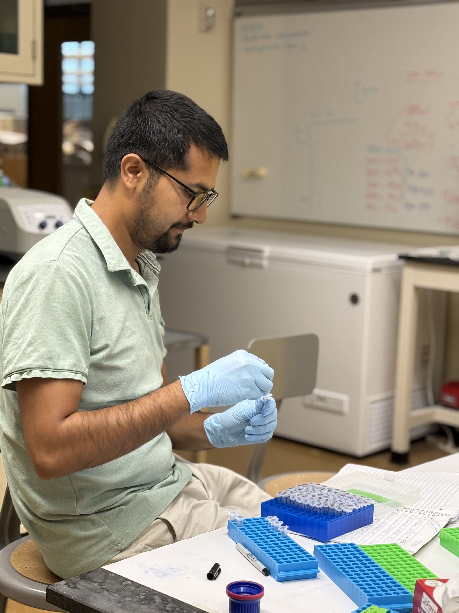
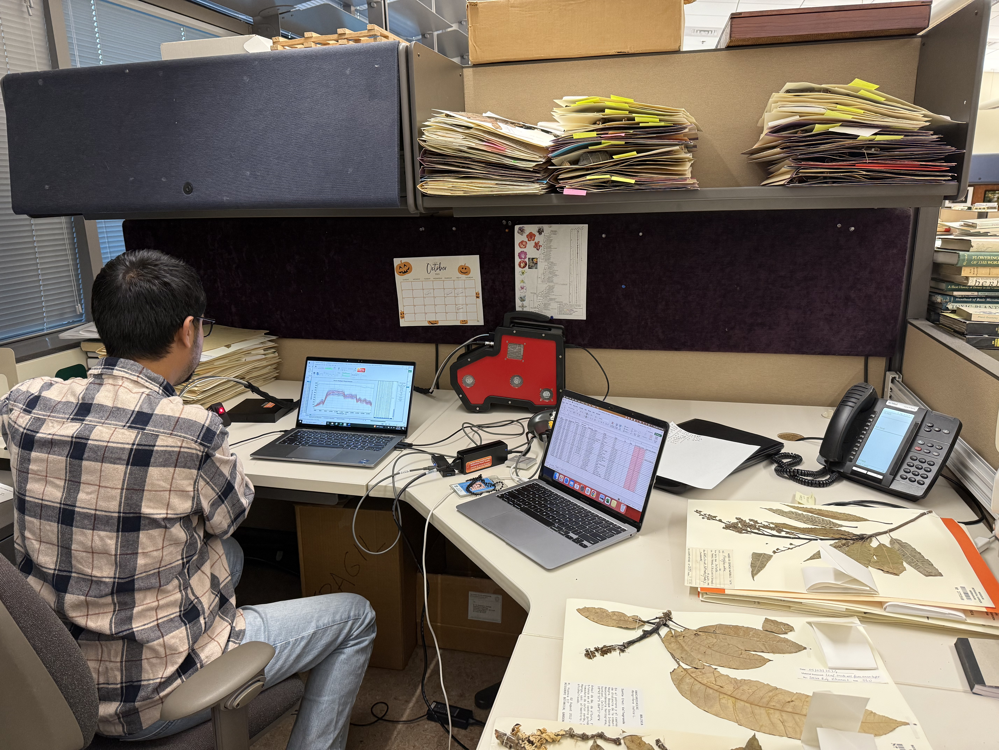
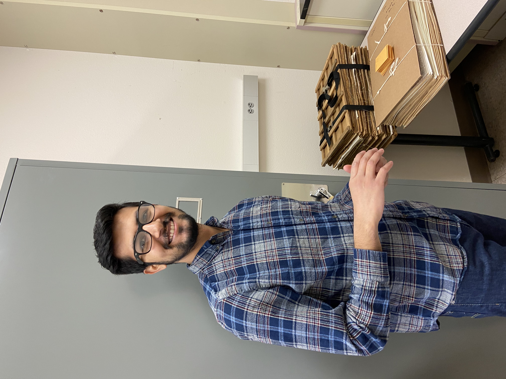
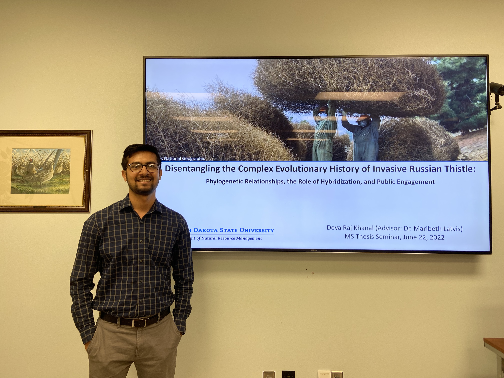
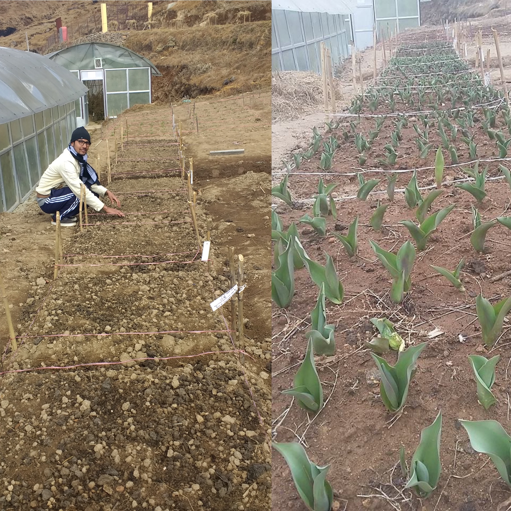
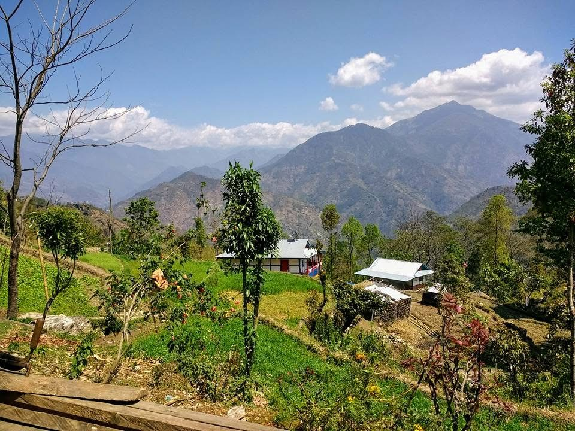

Graduate Research Assistant
Saint Louis University & Missouri Botanical Garden | 2022–2026
Conducted climatic variation analyses using georeferenced botanical records and environmental datasets,
along with DNA extraction, sample quality assessment, inventory management, and leaf trait
and hyperspectral reflectance data collection.




Graduate Research & Teaching Assistant
South Dakota State University | 2019–2022
Conducted molecular and phylogenetic research involving voucher records, DNA extraction and quantification,
sample management, post-sequencing analysis, phylogenetic inferenecs, and bioinformatics.
Served teaching assistants for Range Plant Identification and Plant Systematics (undergraduate level).




Research Intern
Nepal Agricultural Research Council (ARS, Ilam)
Conducted field trials, plant care, floriculture feasibility assessments,
disease scoring, and several agricultural extension activities.

